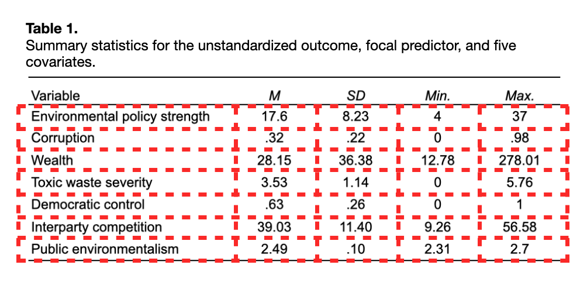

Creating Tables using the {gt} Package
Anatomy of a Table
Any table is essentially a rectangular layout (rows and columns) of information. Below I show two common tables of statistical output taken from the Regression Review notes. I have also added guide-lines to show the rectangular display of information within each of these tables.


To illustrate how to create a table in the QMD document, we will attempt to recreate Table 1 from the Regression Review notes. We can use the fact that data frames are also rectangular displays of information to create a table in the QMD document. The data.frame() function is used to enter the cell information from each column. This is, of course, done in a code chunk.
# Input cell information
tab_01 = data.frame(
variable = c("Environmental policy strength", "Corruption", "Wealth", "Toxic waste severity",
"Democratic control", "Interparty competition", "Public environmentalism"),
m = c(17.6, .32, 28.15, 3.53, .63, 39.03, 2.49),
sd = c(8.23, .22, 36.38, 1.14, .26, 11.40, .10),
min = c(4, 0, 12.78, 0, 0, 9.26, 2.31),
max = c(37, .98, 278.01, 5.76, 1, 56.58, 2.7)
)
# Show output
tab_01Here we entered the cell data in manually, however, most of the time these values will be generated from functions that produce data frames. For example, the output from tidy(), glance(), correlate(), and {dplyr} functionality is a data frame. This output can be used directly when we create our table.
Using the {gt} Package
Once you have the cell information in a data frame, all the rest of the syntax is formatting, adding a caption, changing column names, etc. There are several R packages that can be used to add this formatting. Here I will illustrate functionality from the {gt} package.
Within the gt philosophy, a table can be split up into different parts (see below) that can all be customized. Not every table will have all these parts. For example, our example table has a:
- Table header (table number and caption),
- Column labels (column names), and
- Table body (cell information).
There is no stubhead label, spanner columns, table footer.

The primary function we use is gt(). To use this, we pipe our data frame into the gt() function inside of a code chunk.
# Load library
library(gt)
# Create table
tab_01 |>
gt() | variable | m | sd | min | max |
|---|---|---|---|---|
| Environmental policy strength | 17.60 | 8.23 | 4.00 | 37.00 |
| Corruption | 0.32 | 0.22 | 0.00 | 0.98 |
| Wealth | 28.15 | 36.38 | 12.78 | 278.01 |
| Toxic waste severity | 3.53 | 1.14 | 0.00 | 5.76 |
| Democratic control | 0.63 | 0.26 | 0.00 | 1.00 |
| Interparty competition | 39.03 | 11.40 | 9.26 | 56.58 |
| Public environmentalism | 2.49 | 0.10 | 2.31 | 2.70 |
Note that if you are trying this in your own Quarto document, the table column labels may not be bold. This is a function of the Quarto theme I am using (cosmos) on the website.
To change and format other parts of the table, we continue to pipe other formatting functions from the {gt} package.
Column Labels
Column labels can be changed from the names of the columns used in the data frame. To change them we will use the cols_label() function. This function takes as many arguments as there are columns, each mapping a label to the original column name. Below, we change our column names to match those in Table 1.
# Change Column labels
tab_01 |>
gt() |>
cols_label(
variable = "Variable",
m = "M",
sd = "SD",
min = "Min.",
max = "Max."
)| Variable | M | SD | Min. | Max. |
|---|---|---|---|---|
| Environmental policy strength | 17.60 | 8.23 | 4.00 | 37.00 |
| Corruption | 0.32 | 0.22 | 0.00 | 0.98 |
| Wealth | 28.15 | 36.38 | 12.78 | 278.01 |
| Toxic waste severity | 3.53 | 1.14 | 0.00 | 5.76 |
| Democratic control | 0.63 | 0.26 | 0.00 | 1.00 |
| Interparty competition | 39.03 | 11.40 | 9.26 | 56.58 |
| Public environmentalism | 2.49 | 0.10 | 2.31 | 2.70 |
We can also use the md() function to include Markdown syntax to further format our labels. For example, to make the column labels italics we use the following.
# Change Column labels to italics
tab_01 |>
gt() |>
cols_label(
variable = md("*Variable*"),
m = md("*M*"),
sd = md("*SD*"),
min = md("*Min.*"),
max = md("*Max.*")
) The names we just gave to the variables are only labels. As we refer to the columns in additional functions, we need to use their original names from the data frame.
Column Alignment
To change the column alignment, we use the cols_align() function. We provide this with two arguments. The columns= argument takes a vector of column names using the c() function, and the align= argument takes a character string of "left", "right", or "center". Following typical formatting rules, we left align text columns and center numerical columns.
# Change Column labels to italics
tab_01 |>
gt() |>
cols_label(
variable = md("*Variable*"),
m = md("*M*"),
sd = md("*SD*"),
min = md("*Min.*"),
max = md("*Max.*")
) |>
cols_align(
columns = c(variable),
align = "left"
) |>
cols_align(
columns = c(m, sd, min, max),
align = "center"
)Adding a Title and Subtitle
The tab_header() function can be used to add a title or subtitle to your table. Here we again use the md() function to allow us to use Markdown syntax directly in the title. I also use the opt_align_table_header() function to left align the title and subtitle per APA.
# Add title and subtitle
tab_01 |>
gt() |>
cols_label(
variable = md("*Variable*"),
m = md("*M*"),
sd = md("*SD*"),
min = md("*Min.*"),
max = md("*Max.*")
) |>
cols_align(
columns = c(variable),
align = "left"
) |>
cols_align(
columns = c(m, sd, min, max),
align = "center"
) |>
tab_header(
title = md("**Table 1.** Summary statistics for the unstandardized outcome, focal predictor, and five covariates."),
) |>
opt_align_table_header("left")| Table 1. Summary statistics for the unstandardized outcome, focal predictor, and five covariates. | ||||
Since the title and subtitle appear on separate lines, you can take advantage of that to use the title to provide the table number and the subtitle provides the table caption if you are trying to format in APA style.
Fine-Tuning the Table
The table is very close to matching the original Table 1. But, there are still a couple of things (if you are an Enneagram One) that we need to attend to. For example, we could remove the horizontal lines in the table. These lines are called borders and we can modify them in the tab_style() function. This is a general function that allows us to customize many parts of the table (akin to theme() in ggplot()).
To do this we use the style= argument and call the cell_borders() function within tab_style(). Here we remove all borders (top, bottom, left, and right) by using sides="all" and setting style=NULL. The tab_style() function also requires the argument locations=. We give this argument the function cell_body() which we provide the column and row numbers that we want to remove the borders from. Since we want to keep the horizontal border associated with the first and last rows, we omit those row numbers from the rows= argument.
# Add title and subtitle
tab_01 |>
gt() |>
cols_label(
variable = md("*Variable*"),
m = md("*M*"),
sd = md("*SD*"),
min = md("*Min.*"),
max = md("*Max.*")
) |>
cols_align(
columns = c(variable),
align = "left"
) |>
cols_align(
columns = c(m, sd, min, max),
align = "center"
) |>
tab_header(
title = md("**Table 1.** Summary statistics for the unstandardized outcome, focal predictor, and five covariates."),
) |>
opt_align_table_header("left") |>
tab_style(
style = cell_borders(
sides = "all",
style = NULL
),
locations = cells_body(
columns = 1:5,
rows = 2:6
)
)| Table 1. Summary statistics for the unstandardized outcome, focal predictor, and five covariates. | ||||
Learn More
Like {ggplot2} there are many other functions to the {gt} package that you can use to create and beautify your tables. You should definitely read through the article Introduction to Creating gt Tables on the {gt} documentation website. There are also several other articles available on the site.
- https://gt.rstudio.com/
Check out the {gtExtras} package for even more cool helper functions to assist in creating beautiful tables with gt(). This package includes different table themes, adding graphs such as sparklines, bar plots, or bullet charts into your table, and even including images and tooltips.
- https://jthomasmock.github.io/gtExtras/index.html
There are also many other resources and tutorials for using {gt} available online. Here are two additional resources that were created using {gt} and Quarto! Both were 2022 winners in Posits annual table contest.
Formatting Tables for Assignments
There is no one way to format a table. In the tables I create, I will use sentence case in the caption of the table. (I also do this for figures.) Other scholars, following APA style will use title case. Typically a journal will have a style guide that they want you to follow, but even then, there may be some flexibility in the formatting. For example, here is what it says about column headings in the style guide for the journals of the American Statistical Association:
Every column must have a heading that identifies the content, including the stub column. A heading, should be brief and should not be much wider that the longest entry in the column. Standard abbreviations may be used without explanation (e.g., no. for number, % for percent), but abbreviations of technical terms and the like must be explained in a note to the table (if not already introduced in text). Sometimes a straddle heading may be appropriate to avoid repeating the same word in two or more column heads.
It doesnt indicate whether these should be sentence or title case. It doesnt indicate whether they should be bold, italic, or normal font weight. What most reviewers and editors look for is consistency throughout the paper. Below are some guidelines that we will be looking for in your assignments.
For assignments, you do not need to have your tables APA formatted. (If you want to try and format using APA, go for it!) What we will expect are the following:
- Table number (e.g., Table 1)
- Descriptive caption with consistent capitalization
- Left-aligned text columns
- Consistent capitalization in text columns
- Center-aligned numeric columns
- Consistent capitalization in column labels
- Consistent font weight in column labels (e.g., bold).
- Italicized column labels when the label is a statistic (e.g., M, SD, p). Note: If you are using a bold weight for column headings, then these should be bold and italicized.
- No vertical borders
When we say consistent capitalization it means you get to choosesentence case, title case, whatever; but be consistent with it throughout the table. Dont use title case for some column labels and sentence case for others.